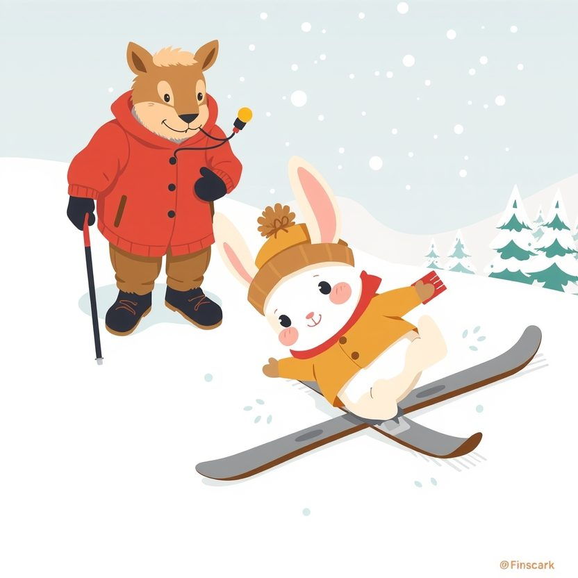

Titistoire › Les Étoiles (3-6 ans)
Rosie, la dernière de la classe
Une histoire de Rosie la lapine pour parler de : être débutante.

▶ Écouter et regarder l'histoire
Gratuit, sans inscription : la voix lit, le texte suit mot à mot, les images tournent comme dans un album.
Le texte de l'histoire
Rosie court plus vite que tout le monde. Elle saute plus haut, elle nage plus loin. Alors, en débarquant à la station des Sapins Blancs, elle n'a pas l'ombre d'un doute. « Le ski ? Je serai la meilleure avant midi. Un, deux, trois, partez ! »
Elle chausse ses skis, se redresse. Et ses deux pattes filent chacune de son côté, comme si elles étaient fâchées. Boum.
Elle se relève. Boum. Elle se relève encore. Boum. « Ces skis sont cassés ! » rouspète-t-elle. « Non, sourit Monsieur Cabri. Ils sont neufs. C'est toi qui es nouvelle. »
Le pire, c'est les autres. Nestor, si lent d'habitude, glisse paisiblement, comme un gros bateau. Plume dessine de petits virages bien nets. Même Pompon tient debout !
Et Rosie, la plus rapide de la forêt, passe sa matinée les fesses dans la neige, à regarder défiler les tout-petits. Elle est la dernière. La toute dernière de la classe.
« Ne te presse pas, lui conseille gentiment Nestor. Fais comme moi. » Recevoir des conseils de Nestor ! Rosie serre les dents. Ses oreilles en fument.
À midi, elle envoie valser ses bâtons. « C'est nul, le ski. C'est un sport idiot. Je n'en ferai plus jamais. » Et elle va bouder sur le banc, devant le chalet.
De là, elle observe les autres. Ils rient. Ils tombent aussi, d'ailleurs. Nestor tombe. Plume tombe. Mais eux, ils se relèvent en riant.
« Comment ils font pour rire ? » marmonne Rosie, toute recroquevillée. Elle, quand elle n'est pas la meilleure, elle a l'impression de n'être plus rien du tout.
Monsieur Cabri vient s'asseoir près d'elle, avec deux tasses de chocolat fumant. « Tu sais pourquoi Nestor y arrive ? » « Parce qu'il est doué. » « Non. Parce qu'il a l'habitude de ne pas réussir du premier coup. »
« Toi, tu es toujours la première. Tu n'as jamais appris à être débutante. C'est un métier, tu sais. Et c'est le plus beau. »
« Le plus beau ? Dégringoler tout le temps ? » s'étonne Rosie. « Bien sûr. Quand on est champion, on ne progresse presque plus. Quand on débute, on accomplit un petit miracle chaque jour. »
Rosie finit son chocolat. Elle regarde ses skis, plantés dans la neige. Un gros soupir. Et elle y retourne. « Mais je vous préviens, je vais tomber. » « J'y compte bien », réplique Monsieur Cabri.
Elle tombe. Une fois, deux fois, dix fois. Mais à présent, elle compte. « Onze ! » crie Pompon. « Douze ! » À la treizième, elle glisse sur trois mètres avant de s'écrouler.
Trois mètres ! « Tu as vu ? Tu as vu ? » jubile-t-elle. Elle a de la neige jusque dans les oreilles, et un sourire jusque-là.
Le lendemain, elle tient debout jusqu'au sapin. Le jour d'après, elle réussit son premier virage. Elle ne l'a pas fait exprès, mais ça compte quand même.
Quand elle tombe, Nestor lui tend la patte. Elle la saisit. « Comment tu fais, toi, pour plier les genoux ? » C'est la première fois de sa vie que Rosie demande un conseil.
« Comme si tu t'asseyais sur un tout petit tabouret », explique Nestor. Elle essaie. Ça marche ! « Nestor, tu es un génie. » Le voilà qui rougit jusqu'au bonnet.
À la fin de la semaine vient le passage du Flocon. Il faut descendre toute la piste verte sans une seule chute. Dans sa poitrine, le cœur de Rosie tambourine.
Elle s'élance. Un triangle. Un virage. Un autre. Elle descend lentement, bien plus lentement que les autres, la langue entre les dents. Elle arrive la dernière. Mais elle arrive debout.
Monsieur Cabri épingle un petit flocon d'argent sur son écharpe. Rosie a gagné des coupes, des médailles, des couronnes. Aucune ne lui a jamais fait cet effet-là.
Le dernier matin, une toute petite marmotte arrive à l'école de ski. Elle chausse ses skis. Boum. Elle se relève. Boum. « Ces skis sont cassés ! » pleurniche-t-elle.
Rosie glisse jusqu'à elle, en chasse-neige. Elle s'accroupit. « Non. Ils sont neufs. C'est toi qui es nouvelle. Et tu as de la chance : c'est le plus beau métier du monde. »
« Allez, je compte avec toi. Un ! » Boum. « Deux ! » Boum. Et sur la piste des débutants résonnent deux éclats de rire, les fesses dans la neige.